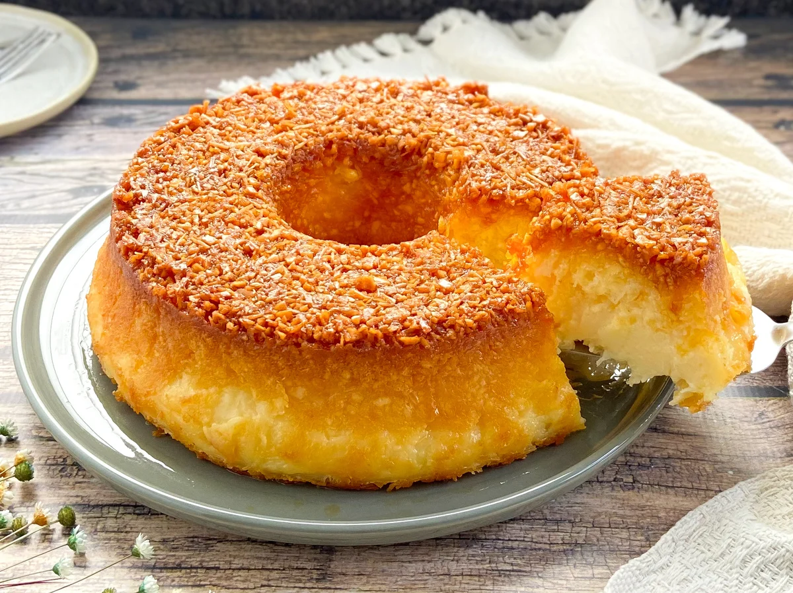

Bolo de Mandioca

Ingredientes
1 e meia xícara de chá ou 360 mililitros de leite
4 ovos
2 xícaras de chá ou 360 gramas de açúcar
1 pitada de sal
50 gramas de manteiga derretida
1 e meia xícara de chá ou 160 gramas de queijo meia-cura ralado grosso
500 gramas ou 3 xícarasd de manteiga descascada e ralada grosso
Modo de Preparo
Numa tigela coloque 1 e meia xícara de chá de leite, 4 ovos, 2 xícaras de chá de açúcar, 1 pitada de sal, 50 gramas de manteiga derretida, 1 e meia xícara de chá de queijo meia-cura ralado grosso e 500 gramas de mandioca descascada e ralada grosso. Misture bem.
Transfira para uma assadeira de 30 centímetros por 20 centímetros, untada com manteiga e enfarinhada. Leve ao forno preaquecido a 180 graus Célsius por 1 hora ou até dourar.
Retire do forno, deixe esfriar, corte em pedaços e sirva.